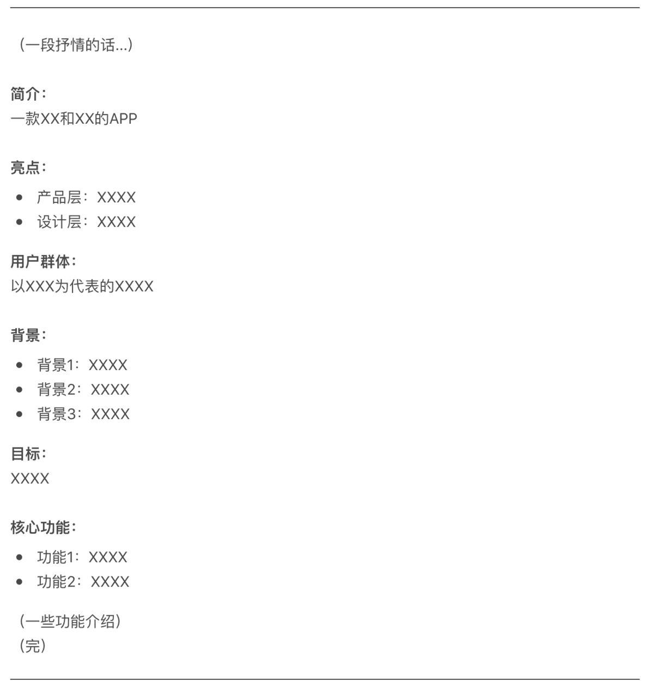
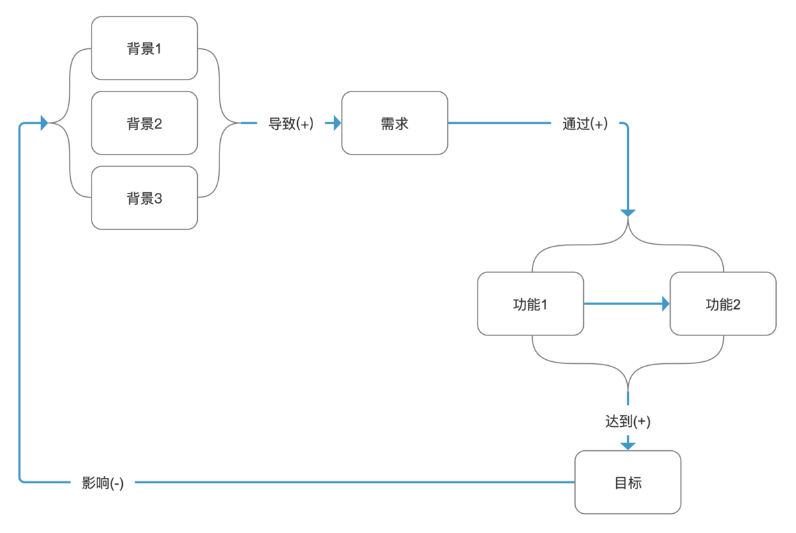
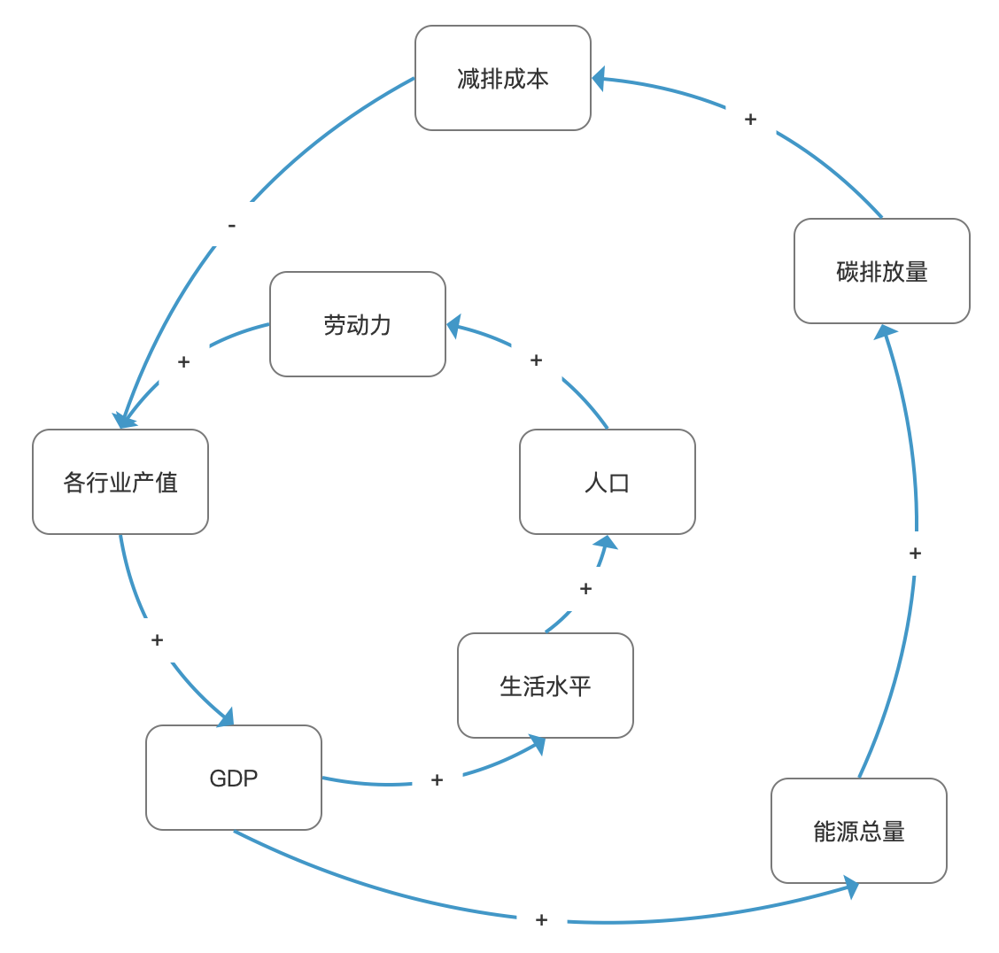

系统动力图是管理学上非常有名的模型，将之迁移至产品分析中也是非常有效的方法论
背景
前些天，一位做UI设计的朋友跟我说她想自己设计一款产品，希望我帮她把把关，于是把她写的文档发给我看，看完之后让我想到了一个成语造句——小白长得真像大白…
文档大致内容如下：

原文比这个结构还要乱一些…虽然很绝望，但求生欲让我硬着头皮也得做下去，在这个过程中我摸索出了一些个人觉得非常有效的方法论，或许对大家也有帮助，故以此分享。
第一步：看清
为什么需要看清？要看清什么？怎么样做到看清？
刘润有一句话我很喜欢，“不抽象，就无法深入思考，不还原，就看不到本来面目。”
在将这个概念用于产品思考之前，我们可以把它放到一个更加抽象的逻辑系统——数学中来理解这三个问题。
这里引用一个众人皆知的例子，欧几里得从五条基本公理和五条几何公理出发，通过推导论证构建出了一个严密的逻辑体系——几何学，他在构建公理化的几何学时过程是这样的：
- 首先，遇到一个具体问题，要做相应的定义，比如什么是夹角；
- 其次，从定义和公理出发，得到相关的定理；
- 然后，再定义更多的概念，用公理和定理推导出更多的定理。
我们在其中抽出几个关键词——公理、定义、定理和推导，然后用更为直白的语言进行还原，公理其实就是出发点或者基本盘，定义就是看待问题的视角，定理就是符合出发点的对于问题的解释，推导则说明他们之间是如何进行联系的。
现在我们再来看一下上面的三个问题：
为什么需要看清？
只有当你的出发点是正确的，看待问题的角度是正确的，你提出的观点才是正确的，并且只有当你的观点之间的联系也是正确的，你才能一步一步地往前推去解决问题。
要看清什么？
这个问题其实在“为什么需要看清中”已经有答案了，但如果要将它归纳得更精简，我认为可以提取为这两个词：要素和联系。
那怎么样做到看清呢？
简单来说就是提取要素、建立联系，但这说了不等于没说嘛，其实这个时候我们可以使用一个非常有效的工具——系统动力图来帮助我们思考，那具体要怎么做呢？
以我在背景中的例子来讲，我们已经建立了一个认知——这份文档让人看着头大…
首先，我们要做的就是取其精华去其糟粕，将里面的关键词抽取出来，这些就是我们需要提取的要素（起码让人不那么头大了），于是我替她提取了以下要素：
- 背景1
- 背景2
- 背景3
- 需求
- 功能1
- 功能2
- 目标
其次，我们需要建立起这些要素之间的联系，怎么做呢？拿出一张纸，动动笔、动动脑，根据你的理解将这些要素用带箭头的线连接起来，并写上他们之间的逻辑关系和正负影响（+或者-），于是我让她根据她的理解建立了如下联系：

ok，以上我们算是从一堆让人头大的信息中理清了她的想法，但这还远不算真正的看清，可能细心且有经验的朋友已经发现了这张图透露出的问题，别着急，我们继续往下走。
第二步：验证
在第一步中，我们算是画出了系统动力图，但在看清的要求中还有一个非常关键的形容词——正确的，我们建立了联系，但是你在每个要素之间建立的联系都是正确的吗？你的脑子里应该有一个不留情面反驳你的小人：
- 有没有可能你所建立的联系只是在部分情况下成立的？那么它成立的条件是什么？
- 有没有可能你所建立的联系并不能直接成立，其实是另一个你没想到的要素才是更直接的因素？
- 有没有可能你所建立的是一个复合联系，需要好几个要素叠加才成立，而你没有考虑周全，或者是搭配不当，甚至是内部会有矛盾，摁下葫芦起了瓢？
- 有没有可能你建立的联系根本就是错误的，其实正好相反？
- …
他应该一直在你的脑子里唠叨，直到你验证了每一个联系。
比如本文例子中的”背景1、背景2、背景3「导致」需求“这个联系，它是整个架构的出发点，一旦这个联系出了问题，整个产品大厦就会轰然倒塌，因此需要格外谨慎地把上面提到的这些可能性（或者更多）都想明白。
那怎么验证呢？这个涉及面太广，没办法一一列出来，或许后续可以再写文章聊一下，目前只能简单地说看你建立的联系是不是能够逻辑自洽，有没有相关的调查、研究或者理论支撑，这就得靠读者朋友见招拆招了。
第三步：优化
经过前面一系列的努力，终于到了第三步，一些了解系统动力图的朋友估计已经被上面那个图憋坏了，由于这里不涉及具体的产品信息，所以仅进行系统动力图结构层面的分析。
原生的系统动力图中各要素之间有正相关(+)或者负相关(-)这两种联系,以下用一个经济发展与碳排放的例子来具体看一下：

在这个例子中，我们可以看到各行业产值增加会使GDP也增加，这个就是正相关(+)，减排成本增加会使各行业产值减少，这个就是负相关(-)。
系统动力图最有意思的地方在于循环，当一个联系链条构成循环之后，整个链条中的要素就会自发地向着某个方向累积影响，根据方向的不同可以分为正反馈循环和负反馈循环。
「各行业产值+GDP+生活水平+人口+劳动力+各行业产值+…」，这是系统中的一个正反馈循环，各要素会往越来越偏离初始状态的方向进行迭代，在这里是各要素变得越来越好，但正反馈循环还存在另外一种糟糕的情况——各要素变得越来越坏。
「各行业产值+GDP+能源总量+碳排放量+减排成本-各行业产值+…」，这是系统中的一个负反馈循环，各要素会往回归初始状态的方向进行迭代，在这里各行业产值增加后最终会使减排成本也增加，而减排成本的增加反过来又会使各行业产值减少，最后各要素趋于一个稳定的状态。
我们在设计产品的时候都希望产品能够建立一个正向的正反馈循环，这样只要系统建立起来之后就会处于一个自增长的状态，用户越多，产品实现用户需求的能力就越强，而产品实现用户需求的能力越强，用户就会越多，如此轻轻松松就能实现用户增长，走上人生巅峰，估计做梦都得笑醒。
但现实没有那么理想，产品通常会处于一个更为复杂的系统之中，你可能已经构建了一个上述的正反馈循环，但于此同时在你没注意的要素之间却又形成了负向的正反馈循环，比如用户越多，服务器的并发越高，用户使用产品的稳定性就越差。
这种时候通常需要你先找到循环交错的关键点，生动地说就是齿轮之间咬合的地方，然后对关键点的属性进行权衡，以取得效用和成本的最优解。
回到本文的例子，我们可以看到在这个系统动力图中产品想要实现的「目标」和产品的出发点「背景」之间是一个负相关关系，整个循环其实是一个负反馈循环，这从逻辑上说明了这个产品不会实现自增长，这对于一个产品来说是致命的，因为无论你怎么努力，它最终都会回归一个平衡态。
这个时候我们可以考虑以下优化方向：
- 通过改变负相关关系中的两个要素，使他们变成正相关关系，这种方法只适用于两个要素不都为客观条件的情况；
- 通过增加新要素构建另一个正反馈循环，但这种方式构建的循环通常只能做到局部正反馈。
如果尝试了各种优化的方向都无法挽回，或者没有办法产生更大的价值，那只能说明这个产品伤太硬，能力有限，爱莫能助。
如果你成功找到了优化的方法，也先别急着高兴，首先还得回到第二步进行验证，否则最后可能会竹篮打水一场空，让你白高兴一场。